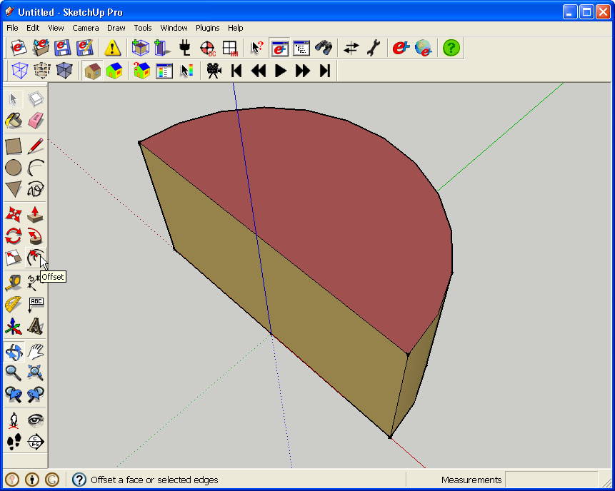
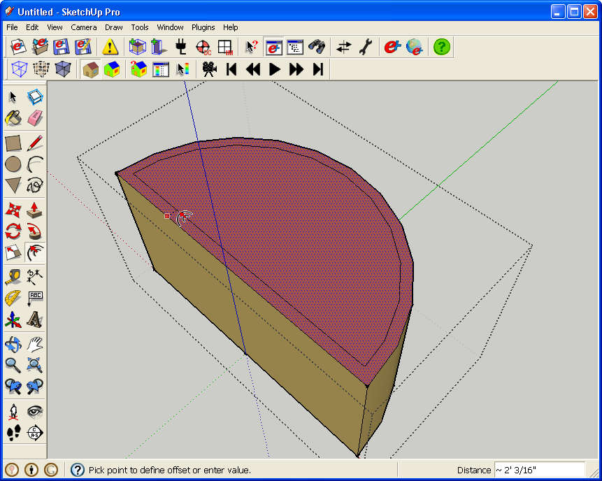
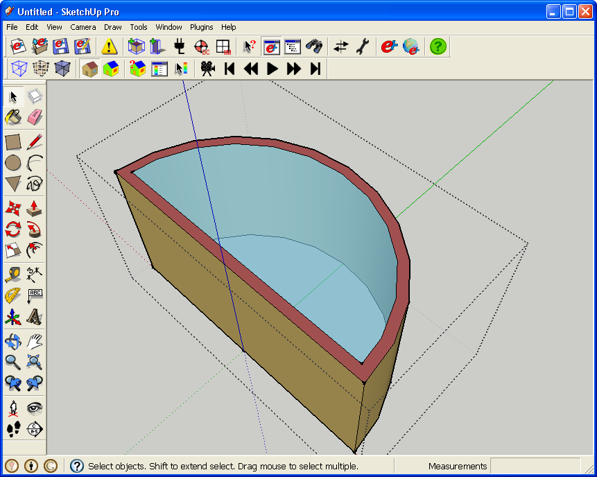
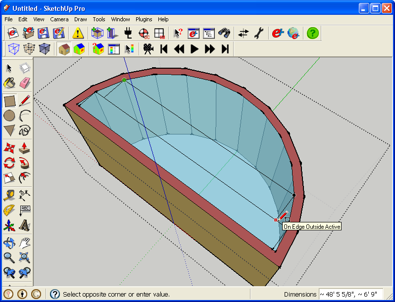
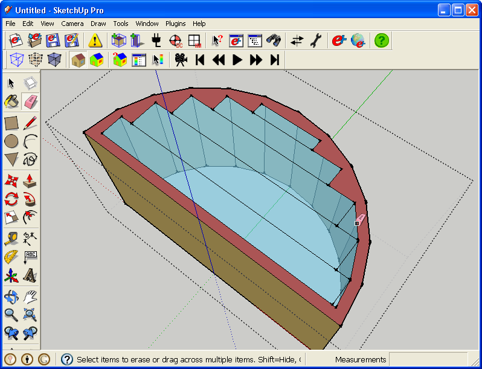
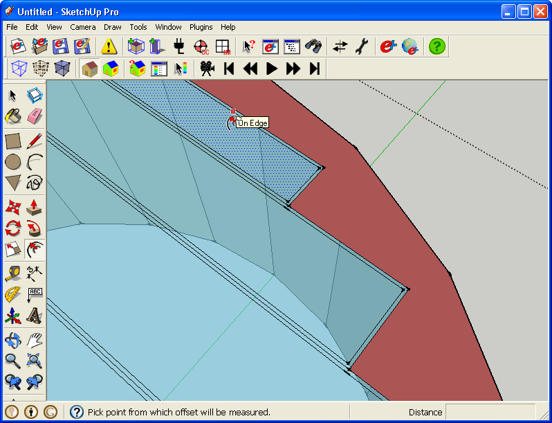
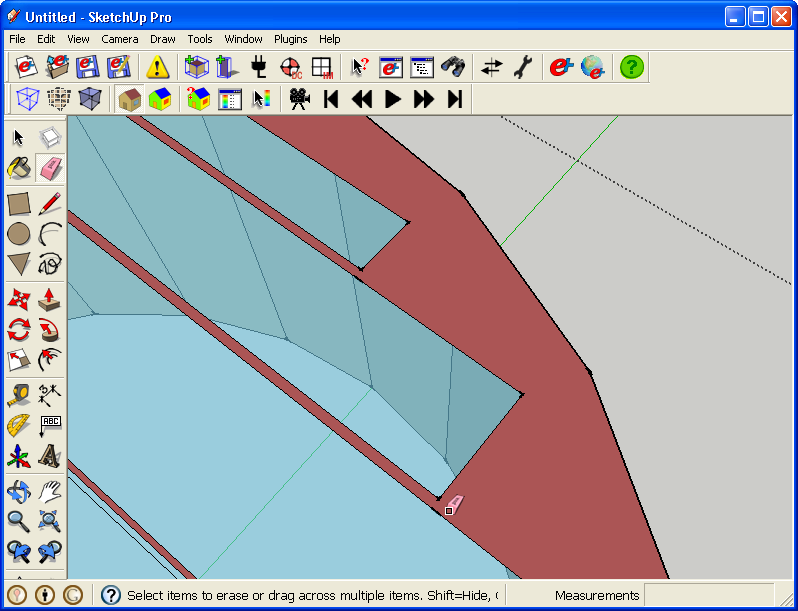
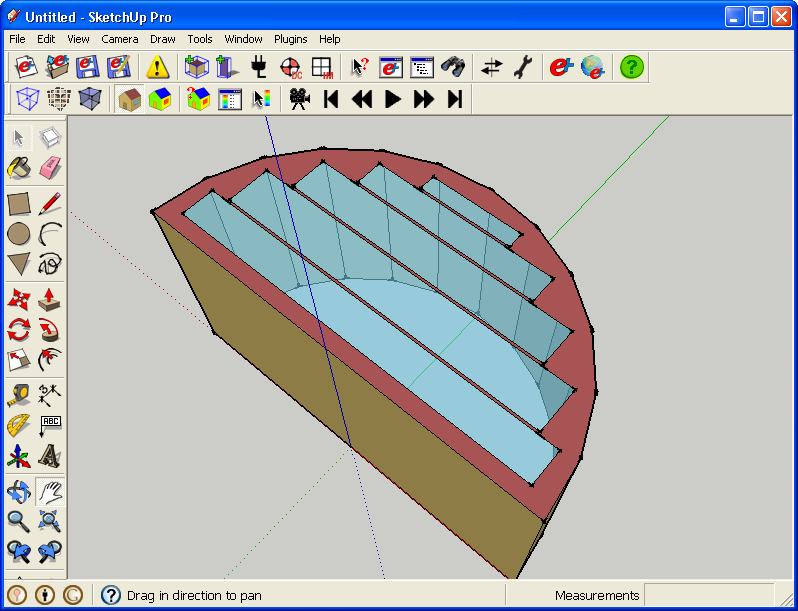

- Generally in EnergyPlus you do not want to have a subsurface share an edge with with another subsurface or it's base surface. The exception is a door, which shares an edge with the bottom of it's base surface.
- Subsurfaces may either be triangles or rectangles but not complex polygons, such as the object shown below. Complex polygons are fine for base surfaces such as walls and roofs and also shading surfaces but they should be convex.

(Credit: David Goldwasser/NREL)
- Below the Offset Tool is used to create a subsurface 24 inches inside of the edge of the base surface. Click once on an edge while the correct face is shown, and then either click a second time to set the offset distance, or use the "Measurements" box at the bottom right of SketchUp's window.
- Click Here to learn more about SketchUp's Offset Tool.

(Credit: David Goldwasser/NREL)
- Below is the results of the offset. It looks like a window, but it will not function properly since it is a complex subsurface.

(Credit: David Goldwasser/NREL)
- Shown below is a strategy to simply the surface while maintaining a good approximation of its size and geometry.
- The semi-circle is filled with a series of rectangles.

(Credit: David Goldwasser/NREL)
- After drawing the circles, use the erase tool to remove the edges that were not included as part of the rectangles. This includes the segmented edges of the original offset semicircle.

(Credit: David Goldwasser/NREL)
- The windows are the correct geometry, but the windows are still sharing edges with each other.
- Below the Offset Tool is used to offset the rectangles by two inches.

(Credit: David Goldwasser/NREL)
- Use the eraser tool to remove the edges of the original rectangles.

(Credit: David Goldwasser/NREL)
- When subsurfaces have been drawn touching they may loose their base surface. If that happens you can retrace the rectangles, or cut them and paste in place (make sure edges selected, but not faces).

(Credit: David Goldwasser/NREL)
- The surface area of your new windows will be slightly smaller than your original window.
- If you want to really get a simulation based on the larger area, you can scale your windows up if your base surface provides enough space, or you can alter the material properties of the window construction used in this instance to make it slightly more translucent (mimicking a slightly larger surface). Just be careful if you choose this route. You do not want to alter the property in other areas using that window type. You need to make a unique window construction for this location.
|